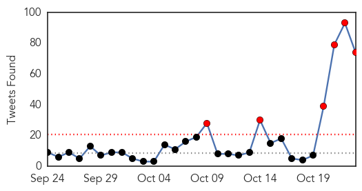
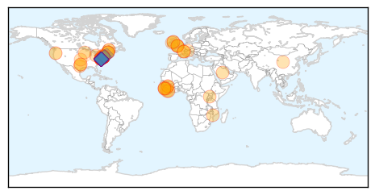
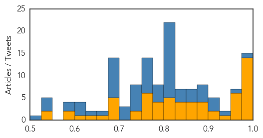

Ebola
30-Day Web Trend
30-Day Twitter Trend
6 alerts, 0 warnings

Article Locations
Article Confidences
Top Articles:
- 1.000
- Ebola: forgotten but not gone?
- 1.000
- Mystery deaths in Sierra Leone spread fear of Ebola relapses
- 1.000
- Potentially high-risk cases test health workers
- 1.000
- Mystery deaths in Sierra Leone spread fear of Ebola
- 0.999
- Sierra Leone Struggles With Ebola Survivors Health Complications
- 0.998
- Ebola nurse Pauline Cafferkey has made 'significant improvement'
- 0.996
- Just why has Ebola been so terrible in West Africa? (Includes interview and first-hand account)
- 0.992
- AP Investigation: Bungling by UN agency hurt Ebola response
- 0.988
- Nurse Kaci Hickox who was quarantined over Ebola fears sues Christie
- 0.987
- Improvement for ebola-stricken nurse pauline cafferkey in 'unprecedented' case
- 0.979
- Physician who survived Ebola celebrates with healthcare staff
- 0.979
- Ebola Blantyre nurse Pauline Cafferkey's condition is still serious
- 0.979
- U.K. Ebola nurse has meningitis caused by persisting Ebola, doctors say
- 0.977
- Ebola fighter Dr. Jerry Brown tells story of courage and hope in appearance at Case Western
- 0.974
- Nurse who was quarantined over Ebola fears sues New Jersey’s governor
- 0.969
- Courthouse News Service
- 0.960
- Sierra Leone is celebrating little victories! – Mocha Club
- 0.954
- A new wave of diseases threatens Southern Europe and the Middle East
- 0.952
- Judge enforces Ebola nurse isolation
- 0.952
- MSF Nurse Sues New Jersey Authorities for Ungrounded Quarantine
- 0.944
- US judge rejects Ebola quarantine for nurse
- 0.919
- Liberia’s Vice President Arrives in Minnesota
- 0.912
- Liberia’s VP Rekindles Atlanta Ties on Four-Day Stopover
- 0.900
- Nurse sues Chris Christie for keeping her in 'private prison'
- 0.897
- Global hand washing day 2015 in Sierra Leone - Sierra Leone
- 0.882
- Nurse quarantined over Ebola fears sues Gov. Chris Christie
- 0.879
- The Ebola nurse is back and she’s suing Chris Christie « Hot Air
- 0.869
- Nurse quarantined over Ebola has no plan to sue in Maine
- 0.861
- Nurse Kaci Hickox sues Gov. Chris Christie over Ebola quarantine
- 0.857
- Scots Ebola nurse Pauline Cafferkey makes 'significant improvement'
- 0.854
- Immortalising Amazon Adadevoh
- 0.842
- Ebola nurse sues Chris Christie over ‘illegal’ quarantine
- 0.842
- Ebola Quarantined Nurse Chris Christie Dared to Sue Him Is Suing Him
- 0.836
- Nurse quarantined over Ebola fears sues Christie
- 0.832
- Quarantined nurse files suit in N.J.
- 0.819
- Nurse quarantined over Ebola fears sues Gov. Chris Christie
- 0.819
- Kaci Hickox, Nurse Quarantined In NJ During Ebola Crisis, Files Suit « CBS New York
- 0.809
- Ebola fear nurse 'held against my will'
- 0.804
- Ebola fear nurse 'held against my will'
- 0.803
- Kaci Hickox, nurse quarantined in Ebola scare, sues New Jersey
- 0.796
- Ebola-Nurse Sues Gov. Chris Christie for “Holding her Against her Will”
- 0.782
- Ebola fear nurse 'held against my will'
- 0.778
- New Jersey Governor Facing Lawsuit From Nurse Quarantined During Ebola Scare
- 0.777
- Nurse Quarantined Over Ebola Has No Plan To Sue « CBS Dallas
- 0.774
- UN: More studies needed on new malaria shots before using it
- 0.771
- Nurse quarantined over Ebola fears sues New Jersey Gov. Chris Christie
- 0.771
- Nurse quarantined over Ebola fears sues New Jersey Gov. Chris Christie
- 0.769
- UN: More studies needed on new malaria shots before using it
- 0.769
- UN: More studies needed on new malaria shots before using it
- 0.767
- Nurse Held by New Jersey Over Ebola Exposure Sues Christie
Showing top 50 articles...
Top Tweets:
- 0.981
- Pegadinha: Vírus Ebola (Ebola Prank) - https://t.co/j83ZzJduO6 ebola
- 0.975
- Info about the Ebola virus - https://t.co/jW22DW9XTQ ebola
- 0.942
- Ebola finally under control in West Africa - https://t.co/8fl1q5MtJ1 ebola
- 0.915
- US nurse sues over Ebola quarantine - https://t.co/wcNDR71Pgn ebola
- 0.907
- We have Ebola !!!! don't say that I have Ebola. - https://t.co/NzzsE1CQ2G ebola
- 0.901
- Nurse sues Gov. Christie for Ebola quarantine - https://t.co/MZZSU4XdwV ebola
- 0.898
- Sonenshine on public diplomacy today - Ebola outbreak - https://t.co/UUE24WC2CI ebola
- 0.897
- Nurse quarantined over Ebola fears sues Christie - https://t.co/Goczlavz7G ebola
- 0.886
- Nurse Quarantined Over Ebola Fears Sues Gov. Christie - https://t.co/SGauRE8rA5 ebola
- 0.882
- The role of TIM-4 in Ebola virus infection - https://t.co/1O2seYnu4p ebola
- 0.869
- Nurse Quarantined Over Ebola Sues New Jersey - https://t.co/kWnKCFlAjP ebola
- 0.868
- Ebola - https://t.co/cZ5lYP7Fq4 ebola
- 0.866
- Scottish Ebola Nurse 'Recovering' - Medscape https://t.co/ijiInWXnab ebola EVD
- 0.846
- Nurse who fought Ebola quarantines sues NJ Gov. - https://t.co/ailpFiNUzb ebola
- 0.840
- Nurse sues Gov. Christie for 3-day Ebola quarantine - https://t.co/ZYhT8WTp7b ebola
- 0.836
- Scottish Ebola Nurse 'Recovering' - https://t.co/WPd1OdatxG ebola
- 0.823
- Nurse Files Lawsuit Over 'Forced' Ebola Quarantine - Newsy - https://t.co/DbW3L8LUDq ebola
- 0.823
- Nurse Files Lawsuit Over 'Forced' Ebola Quarantine - https://t.co/ottziSDp6V ebola
- 0.823
- Nurse Files Lawsuit Over 'Forced' Ebola Quarantine - https://t.co/Lb2AwILoWd ebola
- 0.815
- Ebola nurse sues Chris Christie over 'illegal' quarantine - https://t.co/Va0Hy3nnEb ebola
- 0.810
- Nurse who fought Ebola quarantines sues NJ Gov. Christie - https://t.co/xThQWJpyBI ebola
- 0.810
- 'Ebola Nurse' Sues Chris Christie - https://t.co/cCdGFUMFPI ebola
- 0.810
- 'Ebola Nurse' Sues Chris Christie - https://t.co/SMoRxxYYrt ebola
- 0.808
- Nurse quarantined over Ebola has no plan to sue in Maine - https://t.co/mdV0D2cBIV ebola
- 0.808
- Nurse quarantined over Ebola has no plan to sue in Maine - https://t.co/WhnwSzFGB3 ebola
- 0.808
- Nurse Sues State Claiming Ebola Quarantine Violated Civil Rights - https://t.co/wTowXqjFjs ebola
- 0.808
- Nurse Quarantined Over Ebola Has No Plan To Sue In Maine - https://t.co/dN9cKJ3AwJ ebola
- 0.806
- Nurse Quarantined In NJ During Ebola Panic Is Suing Chris Christie - Gothamist https://t.co/LJLehOelN1 ebola EVD
- 0.806
- Maine Nurse Who Was Quarantined During Ebola Scare Last Year Sues New Jersey ... - People Magazine https://t.co/tjiIPrJzh0 ebola EVD
- 0.805
- Nurse quarantined over Ebola fears sues Gov. Chris Christie - Centre Daily Times https://t.co/LkfAFo3mlM ebola EVD
- 0.805
- Nurse Kaci Hickox sues Gov. Christie over Ebola quarantine - https://t.co/XDPAll3QQK ebola
- 0.804
- Nurse sues Chris Christie over Ebola quaratine - Sun Times National https://t.co/KMpHTmox9H ebola EVD
- 0.801
- Ebola song - https://t.co/hm472feVtE ebola
- 0.788
- .@WHO vaccine advisers say VSV Ebola vaccine seems to be safe & effective. Provisionally recommend use in health workers. Needs more study.
- 0.781
- Quarantined Ebola Nurse Sues Chris Christie for False Imprisonment - https://t.co/qImYqgNxfY ebola
- 0.781
- Ebola nurse Kaci Hickox sues Chris Christie over quarantine - https://t.co/eygWRpa2Yt ebola
- 0.780
- Nurse in Ebola Quarantine Case Sues Gov. Chris Christie - https://t.co/vWxl4UUWJR ebola
- 0.775
- Ebola Nurse to Sue New Jersey State - Daily Beast https://t.co/MLhFmSS00v ebola EVD
- 0.772
- Nurse quarantined over Ebola fears sues Gov. Chris Christie - https://t.co/AeMFqfmSKt ebola
- 0.772
- Ebola Quarantined Nurse Chris Christie Dared to Sue Him Is Suing Him - Jezebel https://t.co/yr6i0h1mRb ebola EVD
- 0.768
- Package food for Ebola victims - https://t.co/mFs36YcgW9 ebola
- 0.766
- Nurse Quarantined In NJ During Ebola Panic Is Suing Chris Christie - https://t.co/rYSoFgrk9O ebola
- 0.765
- The Ebola nurse is back and she's suing Chris Christie - https://t.co/c3BB2iWEw0 ebola
- 0.759
- Nurse Quarantined In Newark During Ebola Crisis Files Lawsuit Against Gov. Christie NJ Officials - https://t.co/NHUyyR1PBw ebola
- 0.758
- Ebola fear nurse 'held against my will' - https://t.co/iVneAtT6UK ebola
- 0.746
- Nurse quarantined over Ebola concerns sues Gov. Chris Christie - https://t.co/OujpfWWOoI ebola
- 0.745
- Nurse who fought Ebola quarantines sues New Jersey Gov. Christie - https://t.co/PxKcwNunor ebola
- 0.743
- Kaci Hickox rebel Ebola nurse loathed by conservatives sues Chris Christie over quarantine - https://t.co/XLI2rWrYaG ebola
- 0.732
- From bedside to patient: An Ebola survivor's odyssey - https://t.co/okQ5sFOtEC ebola
- 0.730
- Bananas can fight the flu: Wonder fruit can 'cure' illness and common cold - https://t.co/od62kgRy1w ebola
Showing top 50 tweets...